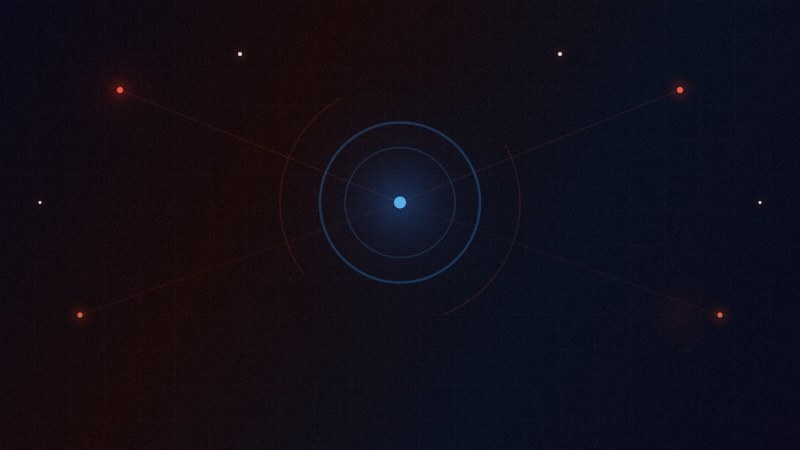
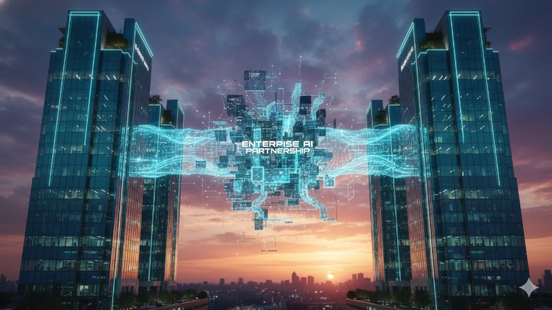

2026년 3월 17일, AI 산업의 판도가 데이터 인프라를 중심으로 급변하고 있습니다. IBM은 110억 달러에 Confluent를 인수하며 실시간 데이터 스트리밍 역량을 확보했고, 라쿠텐은 7000억 파라미터 MoE 모델 AI 3.0을 공개했습니다. 삼성은 AI 디바이스 8억 대 확장을 선언하고, Gartner는 2028년까지 사이버보안 사고 50%가 AI 관련일 것이라 경고했습니다. On March 17, 2026, the AI landscape is shifting around data infrastructure. IBM acquired Confluent for $11B for real-time data streaming, Rakuten unveiled its 700B-parameter MoE model AI 3.0, Samsung expanded AI device reach to 800M units, and Gartner warns 50% of cybersecurity incidents will be AI-related by 2028.
IBM, Confluent 110억 달러 인수 — 실시간 데이터로 에이전틱 AI 기반 구축 IBM Acquires Confluent for $11B — Building Agentic AI on Real-Time Data
IBM이 실시간 데이터 스트리밍 플랫폼 기업 Confluent를 110억 달러에 인수한다고 발표했습니다. 이번 인수는 IBM의 에이전틱 AI 전략의 핵심 요소로, Apache Kafka 기반의 실시간 데이터 파이프라인을 watsonx 플랫폼에 통합하여 AI 에이전트가 실시간으로 데이터에 접근하고 행동할 수 있는 기반을 마련합니다. Confluent CEO Jay Kreps는 이번 결합이 "데이터 스트리밍과 엔터프라이즈 AI의 새로운 시대"를 열 것이라 밝혔습니다. IBM announced the acquisition of real-time data streaming platform Confluent for $11 billion. The deal is central to IBM's agentic AI strategy, integrating Apache Kafka-based real-time data pipelines into the watsonx platform so AI agents can access and act on data in real time. Confluent CEO Jay Kreps said the combination will open "a new era of data streaming and enterprise AI."
라쿠텐, 7000억 파라미터 AI 3.0 공개 — 일본발 초거대 MoE 모델의 도전 Rakuten Unveils 700B-Parameter AI 3.0 — Japan's Bold MoE Model Challenge
라쿠텐이 7000억 파라미터 규모의 Mixture of Experts(MoE) 모델 'AI 3.0'을 공개했습니다. 일본어와 영어에 최적화된 이 모델은 라쿠텐 모바일, 전자상거래, 금융 서비스 전반에 통합될 예정입니다. 특히 DeepSeek의 MoE 기술과의 유사성이 지적되며 기술 독자성 논란이 일고 있으나, 라쿠텐은 독자 개발을 강조하며 아시아 시장 공략을 다지고 있습니다. Rakuten unveiled its 700 billion parameter Mixture of Experts (MoE) model 'AI 3.0'. Optimized for Japanese and English, the model will be integrated across Rakuten Mobile, e-commerce, and financial services. While similarities with DeepSeek's MoE technology have sparked originality debates, Rakuten emphasizes independent development and eyes Asia-Pacific market dominance.

Gartner 경고: 2028년 사이버보안 사고 50%, AI가 원인 Gartner Warns: 50% of Cybersecurity Incidents Will Be AI-Driven by 2028
Gartner가 2028년까지 전체 사이버보안 사고의 50%가 AI 애플리케이션과 직접 관련될 것이라는 전망을 발표했습니다. AI 모델의 취약점을 악용한 프롬프트 인젝션 공격, 데이터 포이즌닝, 모델 탈취 등이 급증하고 있으며, 기업들은 AI 보안 전담 조직을 신설하고 있습니다. Gartner는 기업들에게 AI 보안 프레임워크 도입과 전문 인력 확보를 긴급 권고했습니다. Gartner predicts that 50% of all cybersecurity incidents will be directly related to AI applications by 2028. Prompt injection attacks, data poisoning, and model theft are surging, prompting companies to establish dedicated AI security teams. Gartner urgently recommends adopting AI security frameworks and securing specialized talent.

Accenture-Databricks 전략적 파트너십 확대 — 엔터프라이즈 AI 데이터 플랫폼 통합 가속 Accenture-Databricks Expand Strategic Partnership — Accelerating Enterprise AI Data Platforms
Accenture와 Databricks가 전략적 파트너십을 확대하여 글로벌 기업들의 AI 데이터 플랫폼 통합을 가속화합니다. 양사는 Databricks의 레이크하우스 아키텍처와 Accenture의 컨설팅 역량을 결합하여 기업의 데이터 사일로를 해소하고, 에이전틱 AI 워크플로를 구축하는 것을 목표로 합니다. 특히 금융, 헬스케어, 제조업 분야에서 대규모 도입이 예상됩니다. Accenture and Databricks expanded their strategic partnership to accelerate enterprise AI data platform integration globally. The duo combines Databricks' lakehouse architecture with Accenture's consulting capabilities to break down data silos and build agentic AI workflows, with large-scale deployments expected in finance, healthcare, and manufacturing.
삼성, AI 디바이스 8억 대 확장 선언 — 온디바이스 AI 시대 본격화 Samsung Declares 800M AI Device Expansion — On-Device AI Era Begins
삼성전자가 AI 기능 탑재 디바이스를 8억 대로 확대하겠다고 발표했습니다. 스마트폰, TV, 가전, IoT 기기 전반에 온디바이스 AI를 통합하여 클라우드 의존도를 줄이고 사용자 경험을 개인화하는 전략입니다. Galaxy AI의 성공에 힘입어 가전과 IoT 영역으로 AI 생태계를 확장하며, 애플·구글과의 온디바이스 AI 경쟁에서 선두를 유지하려는 행보입니다. Samsung Electronics announced plans to expand AI-enabled devices to 800 million units. By integrating on-device AI across smartphones, TVs, appliances, and IoT devices, Samsung aims to reduce cloud dependency and personalize user experiences. Building on Galaxy AI's success, the company extends its AI ecosystem to home appliances and IoT, maintaining its lead in the on-device AI race against Apple and Google.
오늘의 AI 산업은 데이터 인프라 확보 전쟁으로 요약됩니다. IBM의 Confluent 인수부터 삼성의 온디바이스 AI 확장까지, 데이터를 잡는 자가 AI 시대를 지배합니다. Today's AI industry is defined by the battle for data infrastructure. From IBM's Confluent acquisition to Samsung's on-device AI expansion, whoever controls the data pipeline will dominate the AI era.
핵심 포인트 Key Takeaways
IBM, 실시간 데이터로 에이전틱 AI 기반 구축 IBM builds agentic AI foundation on real-time data
라쿠텐, 아시아 초거대 AI 모델 경쟁 합류 Rakuten joins Asia's mega AI model race
AI 보안 위협 급증, 전문 프레임워크 시급 AI security threats surge, frameworks urgently needed
데이터 플랫폼 통합 파트너십 확대 Data platform partnerships accelerate integration
온디바이스 AI 시대, 삼성 8억 대 목표 On-device AI era, Samsung targets 800M devices